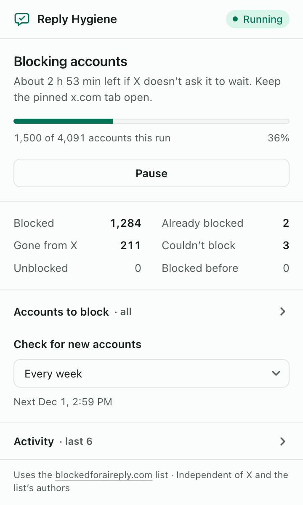
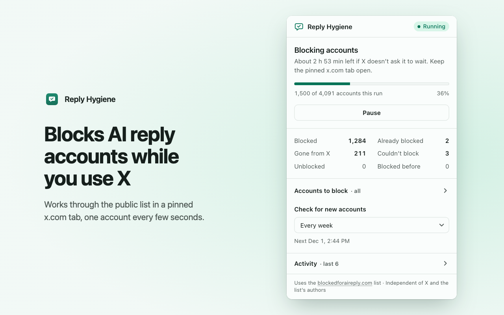
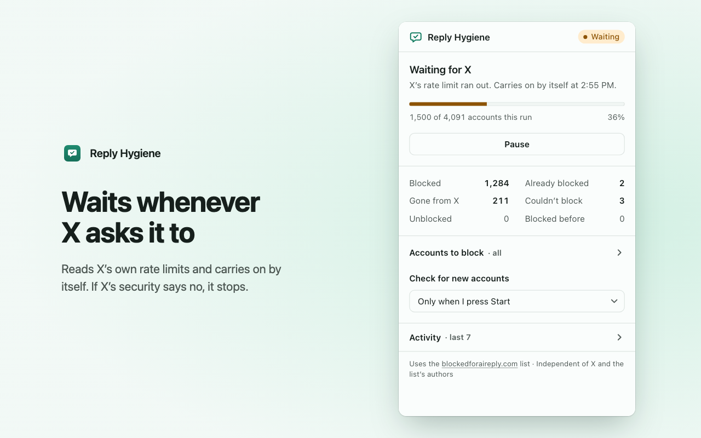
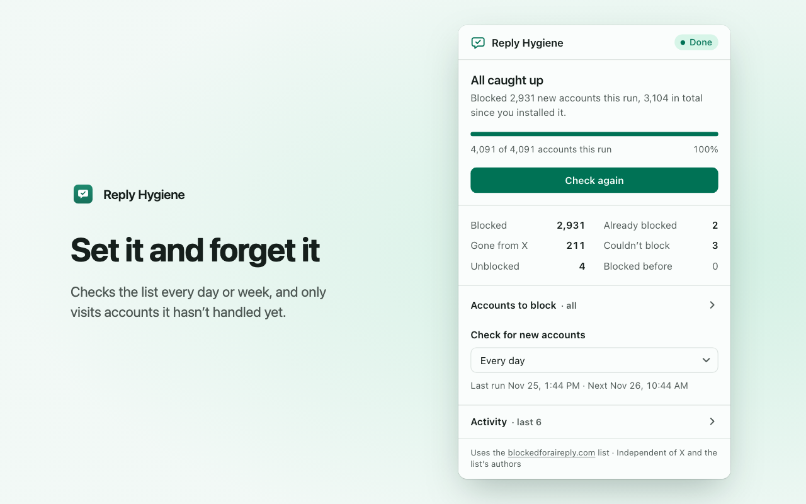
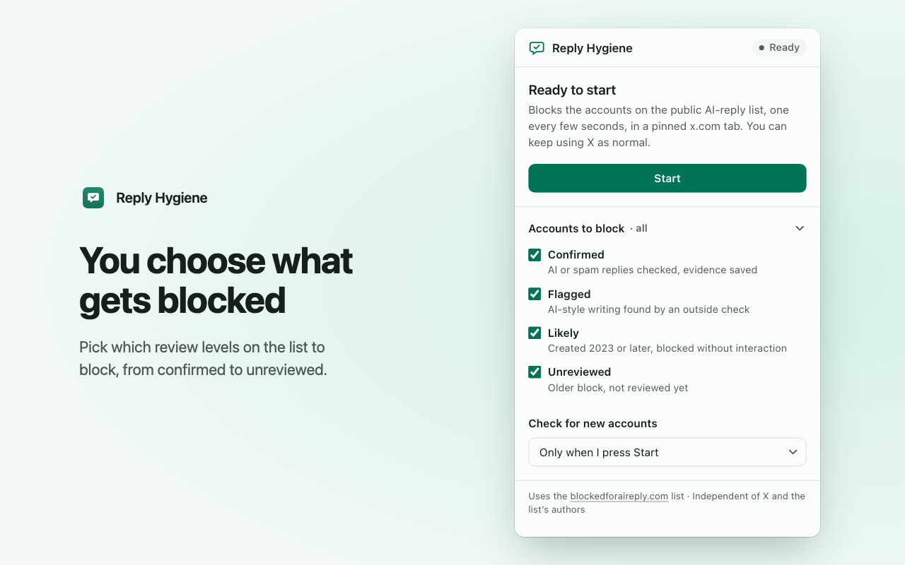
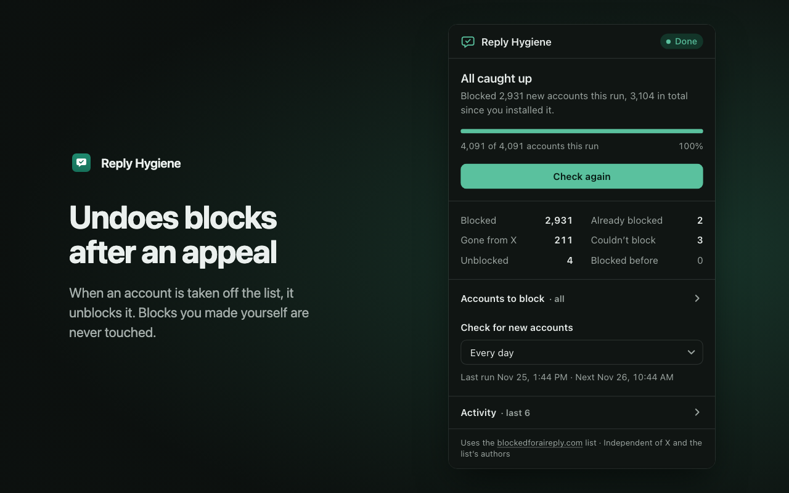

Reply Hygiene
Reply Hygiene
Clear AI reply accounts out of X, without babysitting it
A Chrome extension that blocks every account on the public blockedforaireply.com list, one at a time, while you get on with your day.

How it works
It does what you would do by hand, just patiently, in a tab you never have to look at.
Gets the latest list
Downloads the public list from blockedforaireply.com. You choose which review levels to block: Confirmed, Flagged, Likely or Unreviewed.
Blocks in a pinned tab
Opens each account in a pinned x.com tab, checks the username matches the list, and picks Block from X’s own menu. Keep using X in your other tabs.
Keeps up by itself
Progress is saved, so it carries on after a restart. Set it to check every day or week, and it only visits accounts it hasn’t handled yet.
Careful with your account
Slow on purpose
One account every 3 to 5 seconds, never faster.
Follows X’s rate limits
Reads the limits X sends back and waits until X says it can carry on.
Stops when X says no
If X’s security refuses a request, it stops instead of retrying.
Only blocks
It never follows, likes, replies, reports or sends messages, and only touches the exact account a list entry points to.
Fair to people who appeal
The list has an appeal process. When an account is taken off it, Reply Hygiene unblocks that account on its next run, but only if Reply Hygiene was the one that blocked it.
Blocks you made yourself are never undone, and if you unblock someone it blocked, it won’t block them again.
See it work





Questions
Is this made by X or by blockedforaireply.com?
No. Reply Hygiene is independent. It uses the public list from blockedforaireply.com and credits it, but isn’t affiliated with X Corp. or the list’s authors.
Who decides which accounts are on the list?
The people behind blockedforaireply.com. They review accounts, publish the evidence and handle appeals. Reply Hygiene follows their list and their removals.
Does it collect my data?
No. Settings and progress stay in your browser. There’s no server, no account and no analytics. It only talks to x.com and to blockedforaireply.com to download the list. Read the privacy policy.
Can it get my X account in trouble?
X can treat fast automated browsing as unusual activity and may temporarily refuse requests. Reply Hygiene goes slowly, follows X’s rate limits and stops if X refuses a request. If it stops, use X normally for an hour before trying again. You use it at your own risk.
How long does a full run take?
A few hours for the full list, plus any time spent waiting for X’s rate limits. After that, scheduled runs only visit new accounts, so they’re much quicker.
Does it work if X is in another language?
Not yet. It reads X’s English menus, so set X’s display language to English under Settings, then Accessibility, display and languages. If X isn’t in English, Reply Hygiene stops and tells you rather than guessing.
How do I undo blocks?
Unblock anyone from X’s settings under Privacy and safety, then Mute and block, then Blocked accounts. Reply Hygiene won’t block them again. Removing the extension doesn’t undo existing blocks.
Free, and kept that way by people who chip in
Reply Hygiene has no ads, no paid tier and no tracking. If it saves you some scrolling, you can help cover the time that goes into keeping it working as X changes.